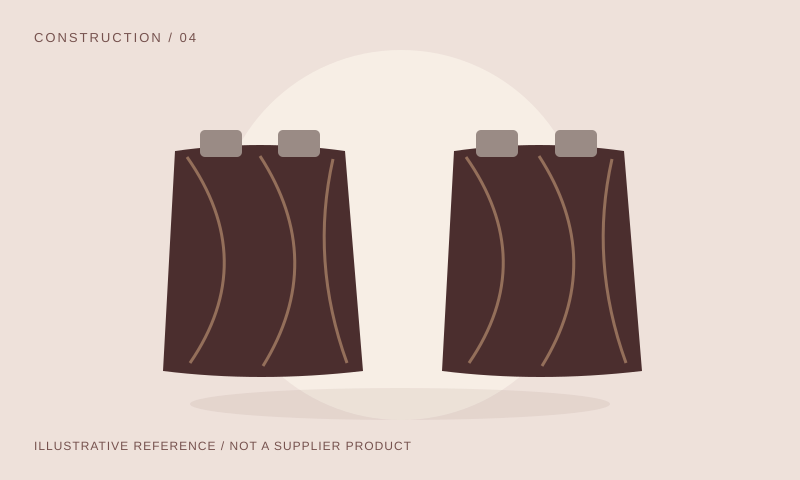
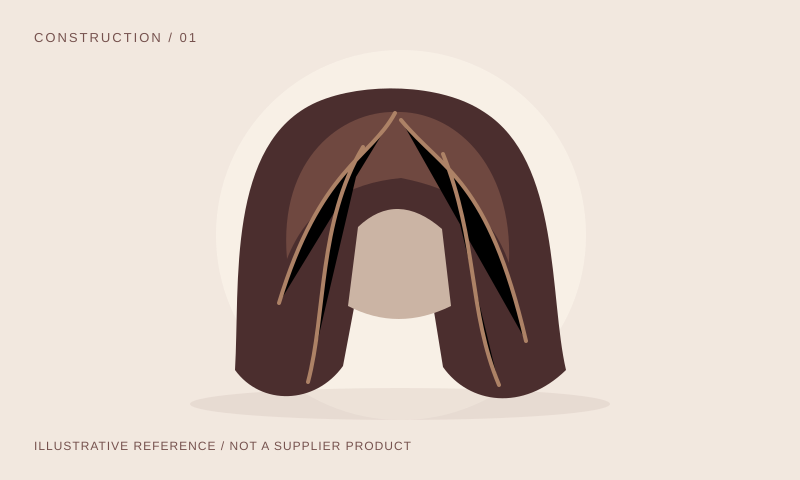
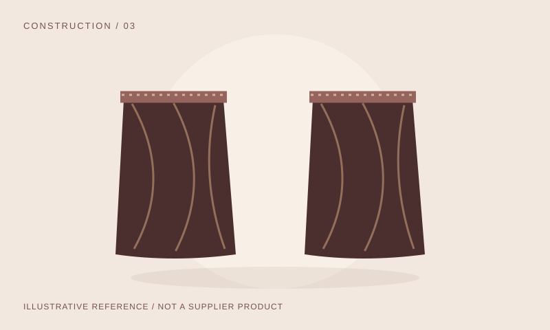
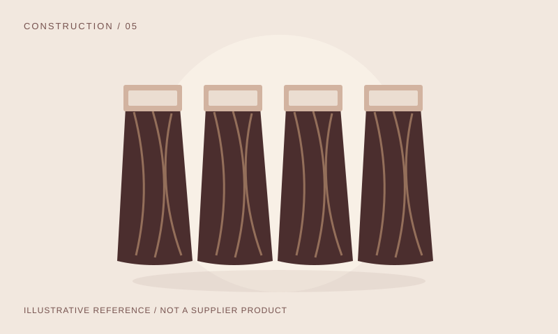

01

Define the set, not just the weight
Record the number of pieces, widths, clips and per-piece weight. Use a physical shade swatch and state how length is measured.
Explore construction, fiber and sample questions for wigs and extensions. Prepare a sourcing brief that helps a salon, retailer or independent brand compare the details.
An independent buyer reference — no stock, supplier endorsements or guaranteed grades.

These are representative sourcing groups, not a stock catalogue. Some groups overlap: clip-ins and tape-ins can use weft construction.
No matching references. Try another category or keyword.
All illustrations are original construction diagrams, not photographs of supplier inventory or verified fiber composition.
Agree what the measurements and claims mean before discussing a pilot order.

Record the number of pieces, widths, clips and per-piece weight. Use a physical shade swatch and state how length is measured.

Link the sample to the quoted lot. Agree measurement tolerances, washing/combing assessment, permitted styling and substitution rules.

Define human-hair, blend, Remy or virgin claims in writing. Ask about processing and attachment materials; a trade label is not proof.
Reviewed 29 October 2026. Educational starting points; exact-product, material, claims and destination rules still need review.
Define human hair, synthetic or blend declarations and processing history. Remy, virgin, raw and density percentages are not proof of an independently verified grade, lifespan or origin.
FTC guidance lists wigs as outside the Textile Act guide; do not apply one generic textile-label rule to every hair product. Other laws and claims still require review.
FTC textile/wool labeling scope ↗FTC claim substantiation ↗Request collection/aggregation and processing locations, supply-chain links and risk-appropriate evidence for labor and consent claims. A supplier declaration is not an independent ethical audit. Do not put donor identity records in a public RFQ.
Review current US forced-labor restrictions and entity lists. Scope is not limited to the final assembly location; no individual supplier has been screened by this site.
CBP: UFLPA starting point ↗DHS: current entity list ↗For EU consumer-intended products, assess GPSR applicability, safety, records, traceability and responsible-operator information. Review REACH obligations for actual fibers, dyes, bases and attachments. No generic CE or REACH badge establishes compliance.
EU General Product Safety Regulation ↗ECHA: restricted substances ↗GB and Northern Ireland rules differ. Adhesive chemicals, therapeutic claims and specialist products may require separate assessment. This site provides no legal advice, certification or import clearance.
Generate, copy or download your requirements locally. Nothing is submitted, emailed or sent to a supplier. You choose who to share the brief with.
PENG Hair Sourcing is an independent procurement-reference prototype. No verified suppliers, stock, prices, lab reports, ethical audits or sales history are claimed. Illustrations show representative construction only.
The public name is provisional and has not completed trademark clearance. This project is independent of Hairsource Atlanta and hairsource.net. Internal repository: hair-source.
Form details exist only in this page. The application does not store RFQ fields, submit forms or send email. Copy puts text on your clipboard; download saves a text file on your device.
Only language preference is saved in browser storage. Browser autofill/restoration may independently retain entries. Hosting providers may process normal network request data; external sources have their own policies.